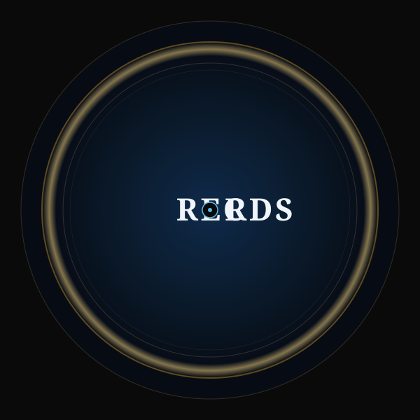
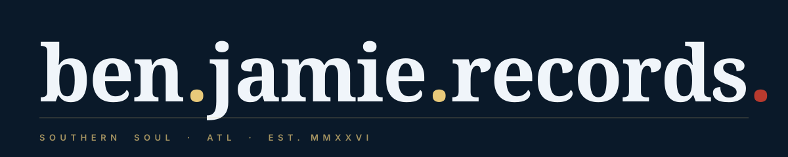

◐ EST. MMXXVI
Label Mark System · Three Concepts · One Imprint
Ben Jamie Records
Southern Soul imprint identity speced to live alongside the M_B artist mark — confident, lived-in, low-volume authority. Three marks ship as one system.
Primary · identity mark
A · BJR Monogram
UseFavicon · social avatars · distribution metadata · release-strip on M_B site · anywhere a single condensed identity is needed.
WhyThree-letter monolith reads at 24px AND on a billboard. Bodoni Moda 900 italic monogram with extended R-leg underline-feel.
Secondary · physical / EPK
B · Vinyl Center Label

UsePhysical release artwork · EPK back-pages · release-credit footers · vinyl-jacket center · merch.
Why7-inch vinyl center evokes 60s-70s soul-imprint heritage. Playfair Italic top arc + Bodoni RECORDS straight across with spindle-hole O.
Utility · wordmark
C · Lowercase Wordmark

UseBody copy · signage · footer attribution · motion lockups · any long-form horizontal context.
WhyModern lowercase Bodoni 900 with ligatured-dot periods. Terminal period in warm-red is the only accent color anywhere in the system.
◐ The Palette ◐
Locked to M_B site
Single coherent system across artist + label. No new colors introduced.
Deep Blue
#0A1929
Black
#0A0A0A
Gray Neutral
#5E6A77
Gold
#c9962b
Gold Pale
#e8c97a
Rose
#5ab8e8
Accent · Red
#B83A2E
◐ Typography ◐
Three weights · one voice
No fourth font. Consistency with the M_B site is the win.
Display · Monogram
BJR
Italic curve
Ben Jamie
Body / wordmark
RECORDS
◐ Usage ◐
Do · Don't
◐ Do
- Place monogram (A) at favicon + social-avatar sizes
- Use vinyl center (B) on physical artwork + EPK
- Use wordmark (C) on body footers + motion lockups
- Keep marks on deep-blue or black ground (canonical)
- Reverse marks to monochrome cream when over photography
◯ Don't
- Add a fourth font
- Introduce chrome / glow / Y2K gradient sludge
- Use cursive "Records" script anywhere
- Rotate or skew the marks
- Use the red accent anywhere except wordmark terminal period